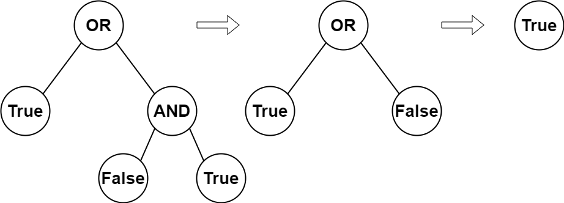

| Category | Difficulty | Likes | Dislikes |
|---|---|---|---|
| Algorithms | Easy | 1534 | 43 |
google | apple | amazon
You are given the root of a full binary tree with the following properties:
0 or 1, where 0 represents False and 1 represents True.2 or 3, where 2 represents the boolean OR and 3 represents the boolean AND.The evaluation of a node is as follows:
True or False.Return the boolean result of evaluating the root node.
A full binary tree is a binary tree where each node has either 0 or 2 children.
A leaf node is a node that has zero children.
Example 1:

Input: root = [2,1,3,null,null,0,1]
Output: true
Explanation: The above diagram illustrates the evaluation process.
The AND node evaluates to False AND True = False.
The OR node evaluates to True OR False = True.
The root node evaluates to True, so we return true.Example 2:
Input: root = [0]
Output: false
Explanation: The root node is a leaf node and it evaluates to false, so we return false.
Constraints:
[1, 1000].0 <= Node.val <= 30 or 2 children.0 or 1.2 or 3.